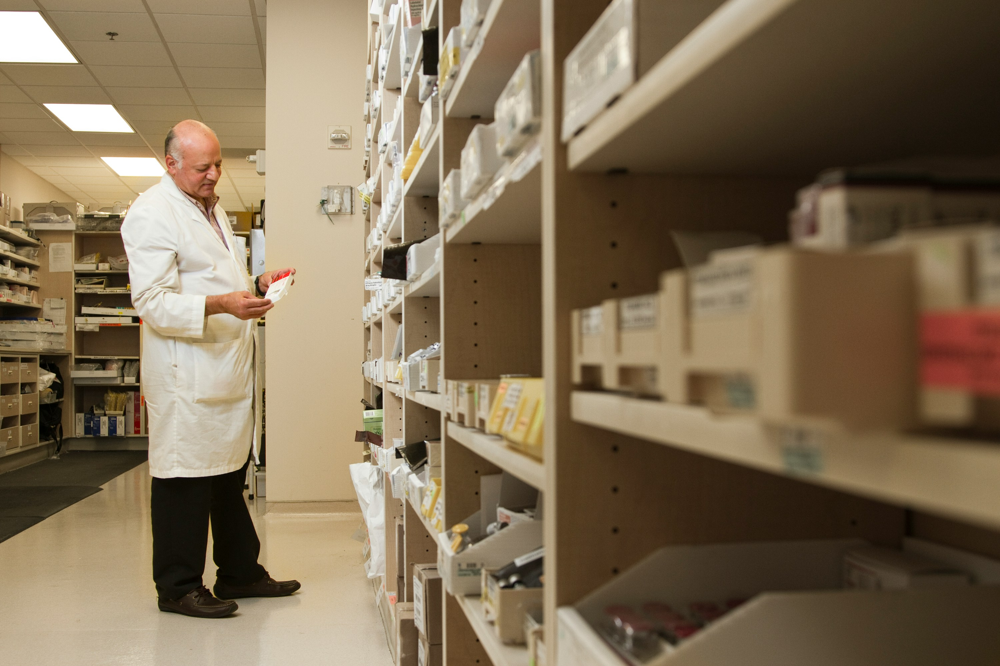

Departments
Diagnostic Departments
- Radiology
- Laboratory
- Cardiology
- Neurology
Therapeutic Departments
- Surgery
- Medicine
- Emergency Medicine
- Rehabilitation
Preventive Care Departments
- Primary Care
- Public Health
Support Departments
- Pharmacy
- Ambulance Services

Dr. Nalin Fernando
- Cardiologist
- MBBS (University of Colombo), MD (Internal Medicine), MRCP (UK)
- 20 years of experience in cardiology
Dr Ayesha Gunawardhane
- General Surgeon
- MBBS (University of Peradeniya), MD (General Surgery), FRCS (Edinburgh)
- 15 years of experience in general surgery
Dr. Ravindra Perera
- Pediatrician
- MBBS (University of Colombo), MD (Pediatrics), MRCPCH (UK)
- 18 years of experience in pediatrics
Dr. Ranil Jayasuriya
- Orthopedic Surgeon
- MBBS (University of Colombo), MD (Orthopedic Surgery), FRCS (Edinburgh)
- 25 years of experience in orthopedic surgery
Why Choose Us?
Our hospital is dedicated to providing exceptional healthcare services that exceed your expectations. With a team of highly skilled professionals, state-of-the-art facilities, and a commitment to patient-centered care, we strive to create a healing environment where you feel valued and supported. Choose us for personalized attention, innovative treatments, and a compassionate approach to your health and well-being
- Quality of care
- Experienced and skilled medical professionals
- Patient-centered approach
- State-of-the-art facilities
- Comprehensive Services
- Wide range of specialties
- Emergency services
- Preventive care
- Innovation and Technology:
- Latest medical advancements
- Research and development
- Community Involvement
- Community partnerships
- Social responsibility